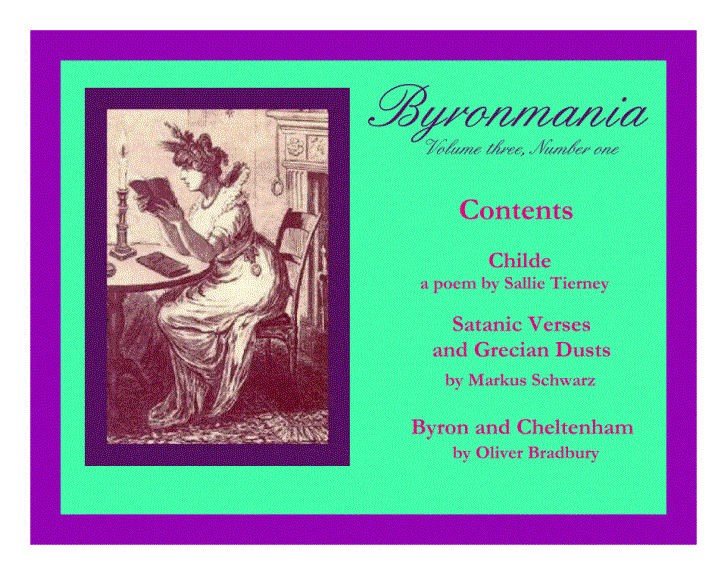
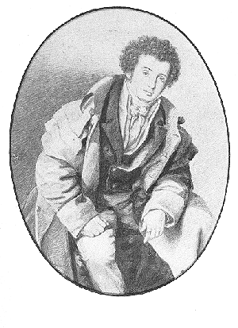
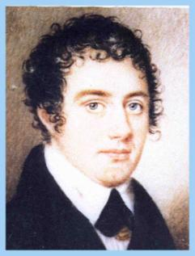

Back to: BYRONMANIA
E-JOURNAL
Back to: BYRONMANIA.COM


WELCOME TO
Volume three number one
Continuing the exploration of
the life and poetry of
The Right Honourable
George Gordon Lord Byron
and the effects he has had on his times and our own
Welcome to three
new contributors to Byronmania
Sallie Tierney,
Markus Schwarz and Oliver Bradbury
Sallie
Tierney has
contributed a charming poem “Childe” to this edition of Byronmania. Her poem “Dark Dawn” about the response of Byron’s spirit
to the threats of undermining his ancestral home appeared in the winter issue
of the Newstead Abbey Review.
“Childe” is a reflection on the
probability that many genetic traces of Byron still grace the villages around
Newstead Abbey. Sallie is an American,
but a founding member of the Newstead Abbey Byron Society.
The first article “Satanic Verses and Grecian
Dusts” is from Markus Schwarz who has
an M.A. degree in English, French and Italian and
lives in Duisburg, Germany. He reports
that he appeared once as Asmodeus in a staged version of Byron’s Vision
of Judgement — although he doesn’t reveal where or when. His article discusses parallels between the
satires of Byron and the Italian poet Leopardi.
The second article, “Byron in Cheltenham: an
Addendum” is a contribution from Oliver Bradbury
who lives in that lovely town. His
article is actually an extension of an article in the Byron Journal, 1999 and a
discussion of the errors he has identified in his area of expertise that were
made by Benita Eisler in her recent Byron biography Byron: Child of Passion;
Fool of Fame.
The Flawed and Foolish Biographers
by Anne Ridsdale Mott
I remember
reading about a cosmologist and a mythologist at a cocktail party discussing a
recently popular and controversial book that argued that ancient technology had
been brought to earth by inter-galactic visitors. The mythologist remarked that the author’s mythology was
hopelessly ignorant but he was deeply impressed with the cosmology. The cosmologist laughed. He had been impressed by the mythology but
knew the cosmology was hopeless.
When someone with
a specialized knowledge can recognize many errors in their area in a work it
casts a long shadow over all the rest of the information. This is what Oliver Bradbury has done to
Benita Eisler’s Byron.
I found more than
40 errors of fact in Phylliss Grosskurth’s Byron. Both of these biographers were either
ignorant of or ignored the research into Byron’s life and works since 1960
based on primary sources and that has attempted to take bias into account in
both primary and secondary sources.
Two flawed
biographies have appeared about Byron in the past few years — we must hope the
one still in preparation at Murray’s will be academically valid and useful.
Would it be too
much to expect real scholarship? some discoveries in the boxes of unpublished
material? some consistent reliance on primary sources and not on the
self-serving and mendacious secondary sources? Most of all I hope for a
biographer who avoids judging a poetic Regency gentleman by contemporary
standards of morals,ethics or even poetics.
"The poet's son," suggests
A nearly microscopic footnote --
Almost an afterthought,
"Born to a maid named Lucy
Likely died in infancy".
But had he the poet's dove gray eyes,
Had he his mother's sunny hair?
And did his mother grieve,
And was his father there?
Yes, surely baby William died --
Yet can't it just as likely be
That Lucy let him out to foster,
Sent her baby out of shire?
That maybe in the family
They made a secret of the matter,
A forgotten mention
In a parish register --
And Will went on in later years
To marry, own a public house,
And raise his sons and daughters.
None of which would ever read
Or write a line of poetry
Or know their father's sire.
And I have reason to believe
This might be so ---
For on my holiday last year,
In a village outside Nottingham,
A shopgirl fair as Summer,
Wrapped my china souvenir --
Her hands as delicate as porcelain,
A dragon's treasure was her hair --
And looking up she asked
If there was something else
I might require --
And
oh the eyes, those Byron eyes!

Satanic verses & Grecian dusts
By Markus Schwarz
Parallels of background between the nearly
contemporary poets Lord Byron (1788 - 1824) and Giacomo Leopardi (1798 - 1837)
have been pointed out as early as 1888 by no less a critic than Matthew Arnold
who wrote in his essay on Byron,“Both of them were of noble birth, both of them
suffered from physical defect, both of them were in revolt against the
established facts and beliefs of their age; but here the likeness between them
ends.” (Arnold in Super ed.:229)
Given the disparity of character and mental
disposition, the different ways in which the two poets lived their lives and
coped with their personal traumas, and – not least – the disparity of their
respective literary output and outlook, Arnold was by no means too hasty in
drawing his comparison to a quick conclusion. Yet, another quirk of history and
biography seems to suggest a 'comparison of opposites', at a point in which
their works nearly converge.
Towards the end of their lives, both poets
dedicated themselves more acutely to political satire. Using the same poetic
mould in this parallel phase of their lives, they both displayed a potential
for satire which was never fully to be realised.
In Byron‘s case, we are looking at The Vision of Judgment, composed,
practically from the hip, to snipe back at Robert Southey‘s A Vision of Judgment (1822), which even
in its own day was felt to be a clumsy panegyric of the late George III .
As a piece of parody, Byron‘s Vision proceeds along similar narrative
threads as Southey‘s 'spavin'd dactyls', yet it is relentless in pointing out
the numerous omissions and 'economies of the truth' disseminated throughout the
vision Southey put to paper in his role as Poet Laureate.
In his version of events, Byron has things
come to a head when Southey himself is brought to the congress of creatures
diabolical and celestial. In so doing, Byron allots a narrative key-function to
his real-life rival, which effectively leads to the same result as in Southey‘s
poem, albeit for different reasons: For it is only when Southey reads from the
manuscript of his Vision that the
whole congress, angels, devils, and ghosts, escape and dissipate in
panic-stricken confusion, allowing George Rex to slip unnoticed through the
gates of heaven.
Byron‘s Vision
has long outlived his adversary‘s extenuating lines on a late Hanoverian
king. His choice of setting and dramatic personae allow for the insertion of a
wide range of political and historical topics, dealing with America's struggle
for independence, the French Revolution or - closer to home - the flamboyant,
notorious opposition-leader Wilkes and the ominously anonymous journalist
Junius.
In the tumultuous scenes before the gates of
heaven, Byron – as narrator - comes up with a detailed picture of an
angelic-demonic antagonism in which the heavenly hierarchy faces a witty and
cunning, but no less sophisticated organisation of infernal opposition. In his
standoff between creatures hellish and heavenly, Byron does not, along the
lines of a strict tit-for-tat policy, depict the satanic ranks as the epitome
of freedom fighters, as idealised revolutionaries, who stand up as the heroic,
vivifying force against ossified principles.
In so doing, Byron, somewhat tempering his
frequently quoted 'whig perspective', has both angelic hierarchy and satanic
ranks emerge as allegorical representations of intricate mechanisms in a
complex modern world.
The playfully depicted, perking pandemoneum
is – albeit highly idiosyncratically - formalised by the use of the ottava rima. This poetic mould, tried by
Byron only once before in a completed poem (Beppo
1817), is a close relative of the Spenserian stanza used in Childe Harold's Pilgrimage, and must
have enthused the poet because of its potential for fast flowing narrative
punctuated by punches of witticism in its final couplet.
Giacomo Leopardi, ten years a junior to
Byron, is hardly a candidate easily remembered for his satirical contributions.
I Paralipomeni
della Batracomiomachia, a lengthy work of 375 octave stanzas in 8 canti, is mostly considered
somewhat out of character in the context of works expressing “a pessimistic,
increasingly vitriolic outlook on life itself” (Boldrini:189); I Canti (his lyrical capolavoro), Operette Morali (philosophical impressions in prose), Il Zibaldone (practically a diary
covering the years 1817 – 1832) all pay fairly obvious testimony to the sense
of fango-futility, from Leopardi at
his most laudably listless;( A se stesso:
e fango è il mondo). the ailing young poet first experienced at his
family‘s home at Recanati. A reclusive by nature, the young Leopardi ruined his
health by over-extensive studies in his father‘s library, and the years he
eventually spent away from the parental estate appear to have been a sad and
solitary existence.
Yet, the paralipomeni
straddle the best part of Leopardi's life. During his frenzied auto-education,
Leopardi had translated the Greek model three times: in 1816, 1821-22 and in
1826 (Binni: 89). This self-set task of reverence was –as of 1831- to bear
fruit under the poet's own name, and accounts by his close friend Ranieri
relation that Leopardi worked on the paralipomeni
while on his deathbed.
Still he titled his own work mere
'supplements to' –i paralipomeni -,
modestly shedding a reverent light on their precursor, namely the batracomiomachia; the war “of mice,
crabs and frogs”, mostly but not unanimously
ascribed to Homer.
The eruditely titled sequel relates a
sequence of events in which the mice –
representing the Italians in their struggle for independence, re-enter
hostilities with the frogs — representing the papists and their allied crabs —
the Austrians.
The insurrection fails, largely due to the
cowardice and indecision of the mice. Leopardi's highly digressive account ends
open-ended when the narrator addresses his readers, promising to conclude his
narrative if and when he finds the missing pages of the manuscript.
Leopardi's mouse-tales depict Italy's
political situation after the insurrectional, revolutionary upheavals of
1820-21 and 1830, roughly 30 years before the peninsula's unification as a
nation state. Ideas about independence are ubiquitous among the many factions
of Italian intellectuals, yet the reality on the ground is governed by harsher
terms stipulated by the ruling Austrians.
Leopardi's picture of 'all creatures mainly
small' is a damnation of his compatriots' incompetence and cowardice as well as
an outburst of frustration in the face of foreign, occupying forces.
The setting of his tale within the kingdom
of the animals might be more than a natural camouflage to escape censorship in
that it lays an implicit claim to timeless validity. Names like Leccafondi or Brancaforte point to general human dispositions. The rare insertion
of a precisely named historical figure — such as George Washington in canto
III, 24, might be an interesting exception, but is outweighed by, for example,
the academically allusive 'guest appearance' of the mythological Daedalus as an
unworldly ally to the cause of the mice.
If Byron's 'telescopic' Vision flaunts some mocking 'sympathy for the devil' in his
deliberately ambiguous role as defender of those 'standing in the shadow',
Leopardi 's satirical supplements are a more serious and fundamental attempt to
'paint it black'.
In this context however, the final note is
to draw attention to the use of the ottava
rima in similar circumstances. As a piece of poetical transfer, initially
defined by Leopardi's compatriot Boccaccio, Byron put it to use in his
idiosyncratic blend of poetic and colloquial speech (Robson's Byron as Improviser in West ed.), which
even when it goes astray –or makes the 'grammar stammer'-, only increases the
reader's sense of hilarity.
The paralipomeni,
as Leopardi's personal 'bible of hell' (Binni) remain more esoteric in their
highly literary references, and more restrained in their philosophical and
political outlook (to the degree that they have been criticised for undertones
of xenophobia (Binni: 93). This sense of resigned omniscience is reflected, on
a formal level, by the way the ottava
rima presents itself. It is used as a structuring device adequate to the
satirical intents and purposes of the poem and it might be conceded that the
grammatical regularity of the Italian language has impeded the serpendipity so
prominent in Byron's rhymes. However, the somewhat stern manner in which the
poetic form is put to use by Leopardi remains in considerable contrast to the
light-hearted, ironically distanced touch of Byron's Vision.
This may in turn give rise to some more
detailed comparisons, the more overtly tempting of which may focus on the two
poets' personalities and vitae, while
a more detailed look at the two works in question may reveal some links
hitherto unnoticed.
~~ *
~~
References
Walter
Binni: La nuova poetica leopardiana; 4th ed.; Sansoni, Firenze 1984
Eugenio
Boldrini ed.: Paralipomeni della
Batracomiomachia; Loescher, Torino 1970
Sergio
Solmi ed.: Giacomo Leopardi, Opere – Tomo
1; Riccardo Ricciardi, Milano – Napoli,
R.H. Super ed.: Matthew Arnold; English Literature and Irish
Politics (XI), The University of Michigan Press, Michigan 1973
Paul West ed.: Byron –a collection of critical essays; Prentice-Hall, Englewood Cliffs,
N.J., 1963
Byron and Cheltenham:
an Addenda
by Oliver Bradbury
Last year I published an account of Lord Byron’s visit to Cheltenham, Gloucestershire, UK in The Byron Journal — “Lord Byron’s 1812 Visit to Cheltenham”. I have a few things to add to that account. A couple of Byronic landmarks have disappeared or changed since then. The Birdlip House I mentioned as a ruin next to the more famous Georgiana Cottage on the Bath Road has now gone. In fact it had gone by the time the Journal had gone to press. We now have nothing contemporaneous, albeit until recently only a neighbouring property, to mark the second securly acknowledged Byronic lodging at Cheltenham.
‘The sordid Inn’ where Byron ‘first alighted’ is no longer the sordid nightclub it had ended up (The Cafe Tabac). It is now boarded up and its future apparently uncertain.
Since my account I have read Benita Eisler’s Byron Child of Passion, Fool of Fame. Eisler is very welcome to correct me if I am wrong but there appears to be no evidence that Byron stayed at Cheltenham’s The Plough (demolished 1982). It certainly wasn’t the ‘Sordid inn’ she quotes. The latter being the just mentioned ex-Cafe Tabac at a considerable distance to The Plough.
I would be intrigued to know on what evidence Colonel Berkeley was Byron’s ‘friend’ as opposed to houseguest/acquaintance and where he persuaded the latter to stay at Berkeley Castle as ‘the ideal prelude to’ Cheltenham. Again what is the source of Berkeley Castle reminding Byron of the loss of Newstead? The Assembly Rooms (demolished 1816) at Cheltenham are attributed to the ‘busy’ Henry Holland and thus not the certainty according to Eisler.
The reference to Lord and Lady Holland’s ‘large rented house near the theater at the fashionable Cambray end of the High Street’ is topographically muddled. This is in fact ‘the sordid Inn’ and was never ‘Later divided into three separate houses - the present nos. 38, 40, and 42 to accommodate ground-floor shops.’ It is quite obviously a terrace of three houses as indicated by the position of staircases, windows etc. I can view the very terrace where Byron stayed from my garden. Again what evidence is there that Byron at the age of thirteen in 1801 ‘rushed to his room to see the sun setting behind the Malvern Hills ... ’. The truth is more sedate, ‘After I had returned to Cheltenham, I used to watch them every afternoon at sunset ...’ (Works, VII, p. 145).
Apropos Venice and Alexander Scott; friend of Lord Byron. A cursory glance at Leslie Marchand’s The Flesh is Frail[1] will reveal Scott was Scottish (as one might expect) and not Eisler’s ‘English’. As we know, Scott partook in the 1818 swim from the Lido to the Riva della Schiavone, but according to Eisler ‘Mengaldo and Scott, ... were exhausted and vomiting water as they were helped into their boats.’ This is erroneous - let us quote Byron’s very own words ‘I have just been swimming from Lido to the Riva... I went in with Hoppner - Scott... and the Chevalier Mingaldo ... none of them went even half the distance... but got back into their gondolas - & drest & were probably at dinner - before I had done my progress - Mingaldo seemed the best fish among them... Hoppner & he both spewed when they got out into their boats’.[2]
Finally back to Cheltenham. I am happy to correct a topographical mistake of my own. The Theatre Royal I located in Grosvenor Terrace was in fact by 1812 situated in Bath Street, Cambray. It had been relocated in 1805. This is now the site of the Garrick Head public house.
On the topic of theatre, according to Theodore Hannam-Clark’s Drama in Gloucestershire published in July 1928 ‘Lord Byron, too, was a firm supporter [of the Theatre Royal]. He and Col. Berkeley, of Berkeley Castle, brought Grimaldi, the famous clown, to Cheltenham in his declining years, entertaining him sumptuously and arranging three benefits which brought him in nearly £200 each. ... He had occasionally dined with Col. Berkeley in London, and at the Castle was most hospitably received. Among the distinguished company was Lord Byron, who always patronised his benefits at Covent Garden. After breakfast they had some good sport, hares being plentiful. The Company dined early to enable Grimaldi and Watson (proprietor of the Theatre Royal) to return to Gloucester ...’. According to Hannam-Clark ‘A study of the playbills, practically all printed by “J. Shenton,” reveals some interesting facts. The list of patrons includes of individuals at various times, ... Lord Byron ... the Berkeley family constantly,’.[3]
Volume three,
number one
January 22, 2000
The Journal
encourages submissions
Subscriptions to
the e-mailed editions are $5 each
or $15 for the
year
Anne Ridsdale
Mott, B Ed., M Ed.
Douglas College,
New Westminster, B.C. Canada
Questions? byronmania [at] shaw [dot] ca